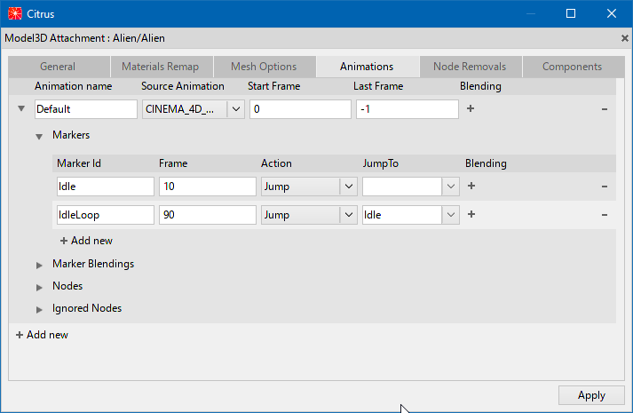

Окно "Model3D Attachment"

Панель "Model3D Attachment используется для настройки Model3D. После редактирования настроек, они сохраняются рядом с моделью в файл вида <название модели>.Attachment.txt. Окно имеет несколько вкладок:
General - основные настройки
- ScaleFactor - масштаб модели. Значение по-умолчанию - 1.
Materials Remap- настройки материалов
- Remap Material - переназначить материал, используемый в модели по-умолчанию.
- Source materials - список материалов, идущих в комплекте с используемой моделью.
Mesh Options - настройки мешей
- Node Id - идентификатор ноды
- Cull Mode - режим куллинга
- Opaque - непрозрачность вкл/выкл
- Hit Test Target - хитбокс вкл/выкл
Animations
Список анимаций по-умолчанию берется из модели. Также можно перегрузить уже существующие анимации или создать новые.
- Animation name - название анимации
- Source Animation - источник анимации
- Start Frame - стартовый фрейм анимации
- Last Frame - конечный фрейм анимации
- Blending - смешивание анимации
Если название анимации отлично от Default - то будут использоваться перегруженные анимации, вместо встроенных.
Node Removals - удаление ненужных нод из ассетов
- Node Id - идентификатор ноды
Components - применение каких-либо компонентов
- Node Id - идентификатор ноды